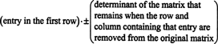

Find the determinate of a nxn matrix. Inputs will be separated by "#".
The determinate of a matrix can be found by Laplace Expansion, which is as follows:
If A = [ aij ] is an n x n matrix, then the determinant of the (n-1) x (n-1) matrix that remains once the row and column containing the entry aij are deleted is called the aijminor. If the aijminor is multiplied by (-1)i+j, the result is called the aijcofactor.
Thus, the determinant of a matrix is the sum of the products of the entries in the first row and their cofactors. See the images below for further clarification.

A 2x2 matrix can be solved as follows:
2 -1 -1
-3 2 1
5 0 -2
#
2 -1
-3 1
3
-1